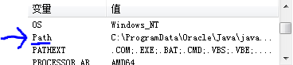

Python——Hello World
Python下载
我们的教程使用的是python最新版本3.6.4。如果你的电脑是64位，点击链接下载 Python-64下载地址 ; 如果你的电脑是32位，点击链接下载 Python-x86下载地址。
Python安装
-
第一步，找到安装包，双击后选择Customize installation。
-
第二步，点击next。
-
第三步，选择browse，路径的话在"D:/"下面新建一个名字为 python的文件夹，然后点击确认。最后点击 Install。
Python环境配置
- Win7系统
- 右键点击计算机。选择属性，点击左边的高级系统设置。
- 点击右下角环境变量,找到下面的系统变量Path。

-
双击Path，然后在一长串字符后面添加（不要把前面的字符删了切记）
;D:\python;D:\python\Scripts。最后点击确认。
- Win10系统
- 右键点击此电脑。选择属性，点击左边的高级系统设置。
- 点击右下角环境变量,找到下面的系统变量Path。
-
双击Path，然后点击新建,输入
D:\python,然后再点新建，输入D:\python\Scripts。最后点击确认。
测试Python是否运行正确
同时按下 windows 键和R 键。输入cmd，然后回车。接着在dos下输入python --version，按回车。如果出现Python 3.6.4，说明安装成功。